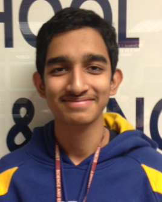
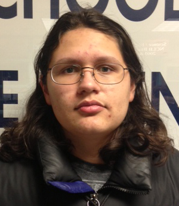
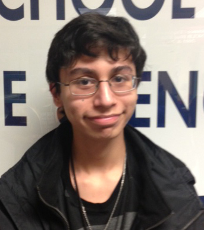
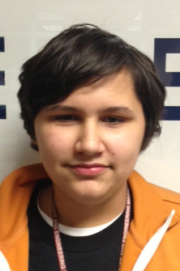
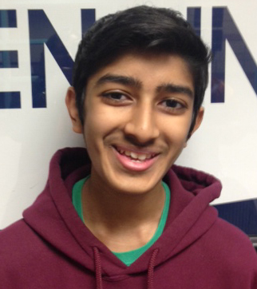

Caitlin Rogers
Hello, I am Caitlin Rogers, and I have been a part of Iron Reign since 7th grade, about 4 years. Robotics has provided me with a focus for my education at SEM, so I know that what I'm learning matters.
Jayesh Sharma
Hello my name is Jayesh Sharma, and I have been part of Iron Reign for about 5 years now. Robotics is an integral part of my outside life and, with my future aspirations in engineering fields, has taught me much of the fundamentals needed in this field. The social lessons taught, including gracious professionalism will also be valuable in the social aspects of life as well. The importance of FTC overall will help me with the intellectual and social points of my future.
Max Virani
Halloo! I'm Max. I've been doing robotics since before I can remember, and have been in Iron Reign since the year it was created as an FLL team, 5 years ago as of now. My robotics experience has helped me get ahead of many in coding, building, and general engineering, and I hope to someday work in biomedical engineering. In the meantime, randomness is a favorite hobby of mine. Banana.
Omar Ramirez
Hey, my name's Omar Ramirez. This is my second year with the Iron Reign team, and it has been a great experience. I enjoy the coding part of it, since I want to enter a field of computer science. Being around people helps my sub-par social skills, and I have had many opportunities to speak in front of audiences, which I actually enjoy now.
Tycho Virani
Hello, I am Tycho Virani, and I have been on the team for 5 years. I'm the youngest person on the team and have seen the effect robotics has had on my life. The ability for me to understand coding and engineering before possibly joining the field will give a huge advantage and I look forward to my knowledge advancing as I gain experience each consecutive year in competition.
Darshan Patel
Hi, I am Darshan Patel. I have been a part of Iron Reign Robotics for one year now, and I have learned quite a bit. I believe robotics is important to my future because it has increased my teamwork skills, my ability to visualize ideas, and allowing me to have hands on experience with building and coding. I enjoy doodling and sketching buildings and cars in my free time and hope to become a professional architect after obtaining a college degree.